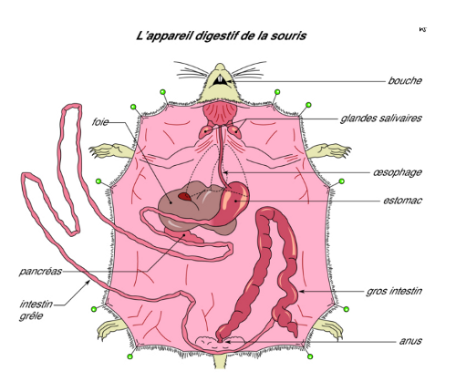
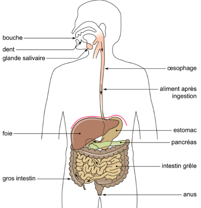

Les nutriments utilisés par nos organes pour produire de l'énergie proviennent des aliments que nous mangeons. ils sont transportés jusqu'à eux par l'intermédiaire du sang. Quelles modifications subissent les aliments au cours de la digestion ? À quel niveau du tube digestif vont-ils gagner le sang afin d'être disponibles pour tout l'organisme ?
L'appareil digestif

La dissection d'une souris par la face ventrale, après incision de la peau et des muscles, permet d'avoir accès à la cavité abdominale où se situent les intestins. Pour dégager la partie thoracique de l'appareil digestif et observer l'œsophage, il faut enlever la cage thoracique, la trachée et les poumons. Il ne reste plus ensuite qu'à dérouler les intestins pour observer la continuité de cet appareil depuis la bouche jusqu'à l'anus.
L'appareil digestif comprend :
- une bouche
- un œsophage ou conduit, situé sous la trachée qui relie la bouche à l'estomac
- un estomac, poche à paroi musculaire et sécrétrice du suc gastrique
- un intestin grêle relativement long
- un gros intestin plus court que l'intestin grêle et de plus gros diamètre, menant à l'anus par lequel sont éliminées les matières fécales ou selles.
L'ensemble constitue le tube digestif. Sur ce tube, sont fixées des glandes annexes qui produisent des sécrétions ou sucs digestifs. Ainsi le foie sécrète la bile qui se déverse, par un canal, dans l'intestin grêle. Le pancréas, situé sous le foie, sécrète le suc pancréatique qui se déverse aussi dans l'intestin grêle. Les glandes salivaires produisent la salive qui se déverse dans la bouche.
Le trajet des aliments dans l'appareil digestif de l'homme
Il arrive qu'un médecin ordonne à un patient, qui a des troubles digestifs, de faire effectuer des radiographies de son appareil digestif. Pour cela, le patient doit ingérer une bouillie opaque aux rayons X. Le radiologue réalise ensuite plusieurs clichés, à intervalles variés, permettant de suivre la progression des aliments dans le tube digestif.
Dans le cas d'un transit alimentaire normal, on constate qu'aussitôt après l'ingestion, la bouillie opaque passe dans l'œsophage (par déglutition), où elle ne fait que transiter. Plus tard, l'estomac s'opacifie pendant environ cinq heures ; c'est ensuite le tour de l'intestin grêle, dans lequel les aliments séjournent environ six heures, puis du gros intestin.
Dans le gros intestin, on retrouve les excréments (ou selles) qui séjournent longtemps à l'intérieur de cet organe, avant d'être rejetés par l'anus.
